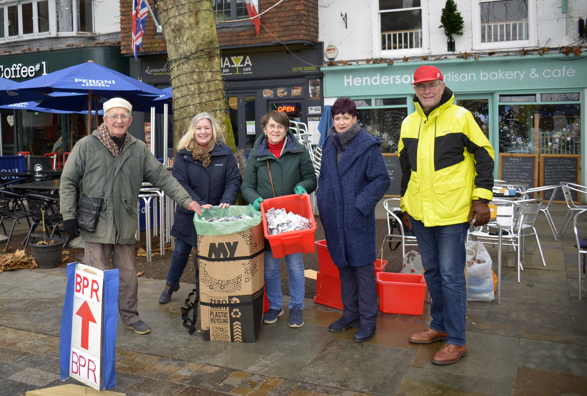

We are two private individuals in Salisbury
d in the UK and that most of them end up being incinerated or dumped in
landfill. We thought there must be some better way than saying to our
neighbours that "they" ( the government, the pharmaceutical industry,
etc) should do something about it. So we decided to try this schme - a
reliable periodic volunteer-run collection where the starter boxes are
paid for by well-wishers, and people using the scheme make a contribution
to enable the prchase of the repacement box.
It seems to work, and it has given us quite a bot of challenge and fun.
So we are going to go on doing it. And we are happy to help anyone else
who shares our concerns and would like to set up a similar scheme
This picture shows us on our first collection
day in Salisbury. It was bitterly cold, but we lasted for 3 hours, and
collected 7000 blister packs!

|